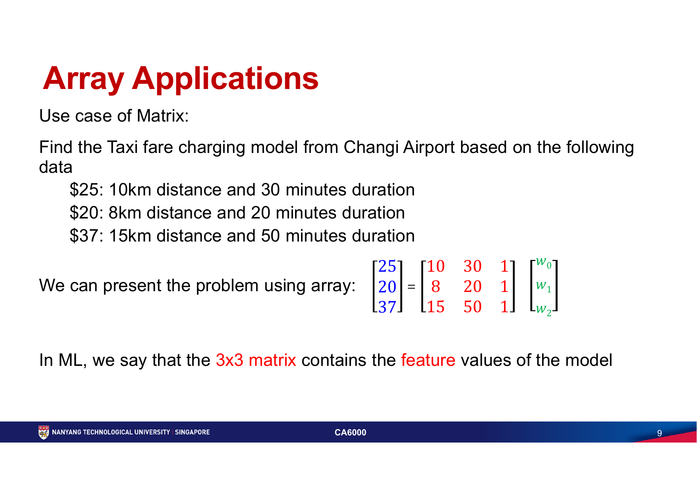
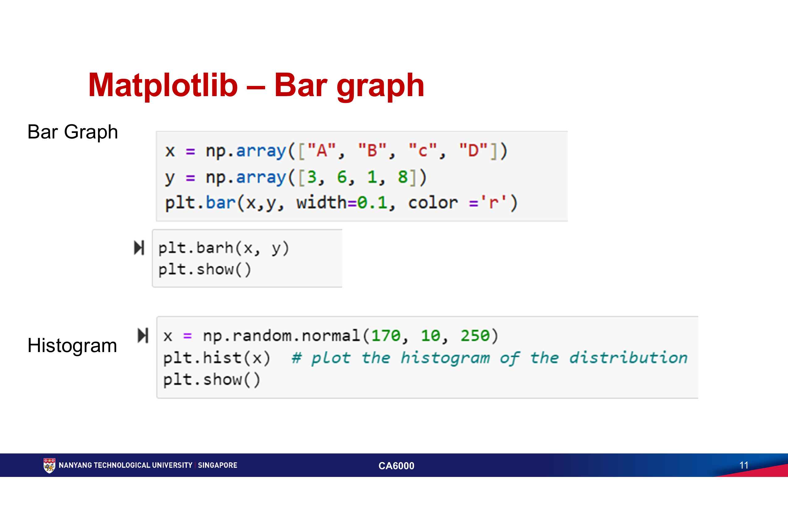
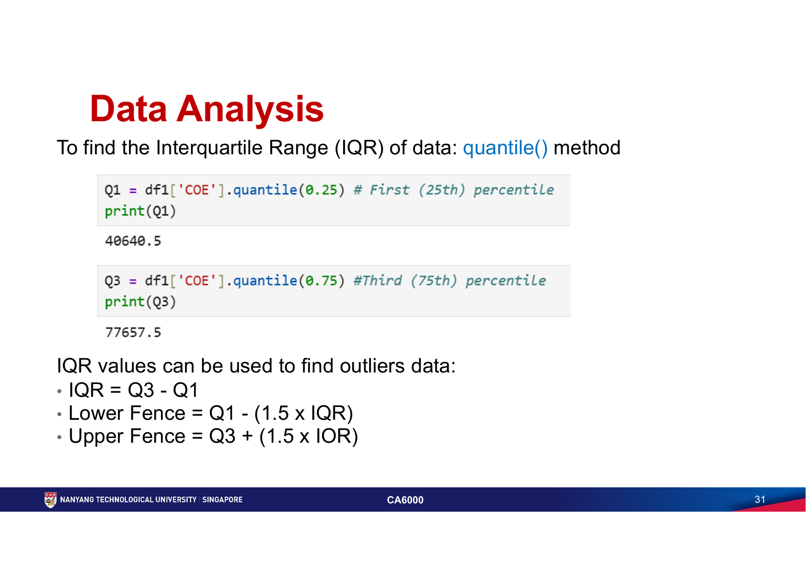

第三周：数值计算、可视化与数据处理
第三周进入 AI 编程常用的数据工具：用 NumPy 表达特征与数值计算，用 Matplotlib 观察数据，用 Pandas 读取、清洗和分析表格，并用类封装可复用的对象行为。
必须掌握的术语
| 术语 | 准确理解 |
|---|---|
| class / instance | class 是创建对象的蓝图；instance 是按蓝图实际创建出来的对象。 |
| attribute / method | attribute 是对象保存的状态；method 是定义在类中、通过对象调用的函数。 |
self | 实例方法的第一个参数，用来访问当前对象自身的属性和其他方法。 |
| dunder method | 双下划线方法，如 __init__、__str__、__add__；Python 在创建、打印或运算对象时会调用它们。 |
| inheritance / superclass / subclass | 子类继承父类的共同状态和行为；父类也称 superclass，子类也称 subclass。 |
| environment / conda | 环境隔离 Python 解释器和第三方包；conda list 检查包，conda install -c conda-forge package 安装到指定环境。 |
| ndarray / shape / dtype | NumPy 的同质 N 维数组；shape 描述维度大小，dtype 描述元素数据类型。 |
| vectorisation / broadcasting | 用数组运算替代 Python 层逐项循环；broadcasting 让兼容形状的数组按规则扩展参与运算。 |
| DataFrame / Series | Pandas 的二维带标签表格与一维带标签列；不同列可保留不同数据类型。 |
| NaN / IQR | NaN 表示缺失数值；IQR 是 Q3 - Q1，可用 1.5 × IQR 围栏识别值得检查的潜在异常值。 |
核心知识
Topic 8 · NumPy｜用数组表达特征与数值计算
本章代码 / 方法：np.array()、arange()、linspace()、zeros()、ones()、shape、dtype、切片、reshape()、布尔过滤、随机数、normalisation 与 np.linalg.solve()。
NumPy 的 ndarray 是同质、连续内存的 N 维数组，因此大规模数值运算通常比 Python list 快。代价是数组长度和元素类型不像 list 那样灵活；需要追加或混合对象时，先问自己是否真的该用 ndarray。机器学习中的数据通常被组织为二维特征矩阵：行是样本、列是特征。

B = Aw。每行是一个样本，距离、时长和常数项构成特征，w 是待求参数。import numpy as np features = np.array([[10, 30, 1], [8, 20, 1], [15, 50, 1]], dtype=float) fare = np.array([25, 20, 37], dtype=float) weights = np.linalg.solve(features, fare) scaled = (fare - fare.min()) / (fare.max() - fare.min())
访问、切片和布尔掩码都应检查 shape，不要让二维数组在不知情时被压平成一维。copy() 创建独立数据；切片往往是 view，修改它可能影响原数组。normalisation 应只根据训练集参数拟合，再应用到验证/测试数据，避免未来信息泄漏。
NumPy 常用操作详解｜先掌握数组思维
NumPy 最重要的不是记住很多函数，而是理解：一个数组有固定的维度、形状和数据类型；运算通常一次作用于整组元素，并沿指定轴汇总。下面覆盖数据分析和机器学习前处理中最常用的操作。
1. 导入与创建数组
import numpy as np
# 从 Python list 创建
a = np.array([10, 20, 30])
matrix = np.array([
[1, 2, 3],
[4, 5, 6]
])
# 按规律创建
np.arange(0, 10, 2) # [0, 2, 4, 6, 8]，结束值不包含
np.linspace(0, 1, 5) # 在 0 到 1 之间均匀取 5 个点
np.zeros((2, 3)) # 2 × 3 的全 0 数组
np.ones((2, 3)) # 2 × 3 的全 1 数组
np.full((2, 3), 7) # 2 × 3，全部填 7
np.eye(3) # 3 × 3 单位矩阵
arange() 的第三个参数是步长，适合整数序列；浮点区间通常优先用 linspace()，因为它明确指定点数，较少受到浮点步长误差影响。
2. 看懂数组的维度、形状和类型
matrix.ndim # 维度数量：2 matrix.shape # 每个维度的长度：(2, 3) matrix.size # 元素总数：6 matrix.dtype # 元素类型，例如 int64 matrix.astype(float) # 转成浮点数组，返回新数组
shape=(2, 3) 表示 2 行 3 列，不是“第 2 维有 3 行”。NumPy 数组通常要求元素使用同一种 dtype；混入字符串可能使整组数据转换成字符串或对象类型，从而失去高效数值运算。
3. 索引与切片
a = np.array([10, 20, 30, 40, 50]) a[0] # 第一个元素：10 a[-1] # 最后一个元素：50 a[1:4] # 位置 1 到 3，结束位置 4 不包含 a[::2] # 每隔一个元素取一次 matrix = np.array([[1, 2, 3], [4, 5, 6]]) matrix[0, 1] # 第一行第二列：2 matrix[0, :] # 第一行 matrix[:, 1] # 第二列 matrix[:, 1:3] # 第 2 到第 3 列，保持二维
二维数组使用 array[行, 列]。matrix[:, 1] 返回一维形状 (2,)，而 matrix[:, 1:2] 保持二维形状 (2, 1)；机器学习模型对这两种形状可能有不同要求。
4. 布尔筛选与条件替换
scores = np.array([55, 72, 88, 61, 95]) scores >= 70 # 产生 True / False 掩码 scores[scores >= 70] # 只保留不低于 70 的值 scores[(scores >= 60) & (scores < 90)] np.where(scores >= 70, "Pass", "Fail") np.clip(scores, 60, 90) # 小于 60 变 60，大于 90 变 90
多个数组条件使用 &、|、~，每个条件都要加括号。np.where() 根据条件选择两个结果，clip() 则把数值限制在上下界内；二者含义不同，不应为了方便随意截断真实异常值。
5. 向量化运算：一次作用于整个数组
x = np.array([1, 2, 3]) x + 10 # [11, 12, 13] x * 2 # [2, 4, 6] x ** 2 # [1, 4, 9] np.sqrt(x) # 平方根 np.log(x) # 自然对数 np.round(x / 3, 2) # 保留两位小数 y = np.array([10, 20, 30]) x + y # 对应位置相加
这些表达式不需要自己写 Python for 循环。NumPy 在底层批量执行数值运算，代码更短、通常也更快。前提是数组形状兼容且每个位置的对应关系确实有意义。
6. Broadcasting：形状兼容时自动扩展
matrix = np.array([
[10, 20, 30],
[40, 50, 60]
])
matrix + 5 # 标量扩展到全部元素
column_means = matrix.mean(axis=0) # 每列均值，shape 为 (3,)
centered = matrix - column_means # (2, 3) 减 (3,)
row_offsets = np.array([[100], [200]]) # shape 为 (2, 1)
adjusted = matrix + row_offsets
Broadcasting 从最后一个维度向前比较：两个维度相等，或其中一个为 1，才可自动扩展。它不会真正复制整份数据，但也可能让形状错误“合法运行”；结果可疑时先打印各数组的 shape。
7. 汇总统计与 axis
matrix.sum() # 全部元素合计 matrix.mean() # 全部元素平均值 matrix.min() # 最小值 matrix.max() # 最大值 matrix.std() # 标准差 matrix.argmin() # 最小值在展平数组中的位置 matrix.argmax() # 最大值在展平数组中的位置 matrix.sum(axis=0) # 沿行压缩：得到每列合计 matrix.sum(axis=1) # 沿列压缩：得到每行合计 matrix.mean(axis=0, keepdims=True) # 保留二维形状
理解 axis 的可靠方法不是死背“0 是列、1 是行”，而是看哪个维度被压缩：axis=0 消掉第 0 维（行），留下每列结果；axis=1 消掉第 1 维（列），留下每行结果。
8. 改变形状、转置与展平
a = np.arange(12) matrix = a.reshape(3, 4) # 3 行 4 列 matrix.reshape(2, -1) # 自动推断另一维为 6 matrix.T # 转置：shape 从 (3, 4) 变 (4, 3) matrix.ravel() # 展平成一维，可能共享原数据 matrix.flatten() # 展平成一维，并创建副本
reshape() 前后元素总数必须一致，-1 最多出现一次，让 NumPy 自动推断该维长度。转置只交换轴，不会改变元素值；一维数组 a.T 仍是一维，若需要列向量应使用 a.reshape(-1, 1)。
9. 合并、拆分、排序与唯一值
a = np.array([1, 2, 3]) b = np.array([4, 5, 6]) np.concatenate([a, b]) # 一维连接 np.stack([a, b], axis=0) # 新增轴，shape 为 (2, 3) np.vstack([a, b]) # 按行堆叠 np.column_stack([a, b]) # 按列堆叠 np.sort(np.array([3, 1, 2])) np.unique(np.array([2, 1, 2, 3]), return_counts=True) np.array_split(np.arange(10), 3)
concatenate() 沿已有轴连接，stack() 会新增一个轴。合并前除目标轴外，其余维度必须兼容；经常先检查每个数组的 shape。
10. 缺失值与 NaN
values = np.array([10.0, np.nan, 30.0]) np.isnan(values) # 哪些位置是 NaN np.isnan(values).sum() # NaN 数量 np.nanmean(values) # 忽略 NaN 的平均值 np.nansum(values) # 忽略 NaN 的合计 np.nanmin(values) np.nanmax(values)
np.nan == np.nan 的结果是 False，所以不能用等号判断 NaN；应使用 np.isnan()。NaN 本质上是浮点缺失标记，整数数组通常不能直接存普通 NaN，需要转成浮点或改用 Pandas 的可空数据类型。
11. 随机数与可复现性
rng = np.random.default_rng(seed=42) rng.integers(1, 7, size=10) # 模拟 10 次骰子，结束值 7 不包含 rng.random(5) # 0 到 1 的均匀随机数 rng.normal(0, 1, size=1000) # 均值 0、标准差 1 的正态分布 rng.choice(["A", "B", "C"], size=5) rng.shuffle(scores) # 原地打乱
新代码优先使用 np.random.default_rng()。固定 seed 能让示例、测试和实验结果可复现；正式模拟时也应记录种子，而不是反复运行直到出现喜欢的结果。
12. 点积、矩阵乘法与线性方程
x = np.array([1, 2, 3]) y = np.array([4, 5, 6]) np.dot(x, y) # 向量点积：32 A = np.array([[1, 2], [3, 4]]) B = np.array([[5, 6], [7, 8]]) A @ B # 矩阵乘法 A * B # 对应元素相乘，不是矩阵乘法 # 求解 Ax = b；通常不要手动计算逆矩阵再相乘 b = np.array([5, 11]) x = np.linalg.solve(A, b)
* 是逐元素乘法，@ 才是矩阵乘法。解线性方程使用 np.linalg.solve() 通常比 np.linalg.inv(A) @ b 更稳定、也更高效；求解前要确认矩阵维度和数值条件。
13. View 与 Copy：最容易制造隐蔽错误的地方
a = np.array([10, 20, 30, 40]) view = a[1:3] # 切片通常与 a 共享数据 view[0] = 999 # a 也可能随之改变 safe = a[1:3].copy() safe[0] = 0 # 不影响 a
为了性能，NumPy 切片常返回 view，而布尔或花式索引常返回 copy。不要仅凭语法猜测是否共享数据；准备修改切片且不想影响原数组时，明确调用 copy()。
NumPy 学习优先级
| 优先级 | 应掌握内容 |
|---|---|
| ★★★★★ 必须会 | array()、arange()、linspace()、shape、dtype、索引切片、布尔筛选、向量化运算、sum()、mean() 与 axis。 |
| ★★★★ 很快会用到 | broadcasting、reshape()、转置、where()、concatenate()、随机数、NaN 统计及 view / copy。 |
| ★★★ 后面再学 | stack()、高级索引、线性代数、多个轴的变换、性能与内存布局。 |
Topic 8 · Matplotlib｜先让图回答一个明确问题
本章图表：折线图、subplot、scatter plot、bar / barh、histogram、pie chart 与 3D plot。它们分别用于连续变化、并列比较、关系、类别比较、分布、组成和空间表面；图形选择仍必须回到数据类型与问题。
Matplotlib 常以 matplotlib.pyplot 作为 plt 导入。每张图都要明确坐标轴、标题、单位与需要时的 grid；marker、line style、颜色和 subplot 应服务于比较，不是装饰。多图时让轴范围、单位和排序可比，避免读者在每个面板重新猜测尺度。

import matplotlib.pyplot as plt
plt.bar(["A", "B", "C"], [3, 6, 1])
plt.ylabel("count")
plt.title("Category comparison")
plt.show()
直方图的柱是连续区间，bar chart 的柱是离散类别；两者不能混用。pie chart 只适用于少数部分组成整体且差异明显的情况；若任务是比较大小或排序，bar chart 通常更准确。课件涵盖 3D，但 3D 透视会干扰精确比较，应只在第三维空间结构本身是问题时采用。
Matplotlib 常用操作详解｜从“画出来”到“读得懂”
Matplotlib 的核心流程是：先明确问题与数据类型，再创建 Figure 和 Axes，在指定 Axes 上画图，最后补齐标题、坐标轴、单位、图例和必要标注。下面优先使用更明确的面向对象写法。
1. 导入与第一张图
import matplotlib.pyplot as plt
x = [1, 2, 3, 4, 5]
y = [2, 5, 4, 8, 10]
fig, ax = plt.subplots(figsize=(8, 5))
ax.plot(x, y)
ax.set_title("Value over time")
ax.set_xlabel("Time (day)")
ax.set_ylabel("Value (unit)")
plt.show()
fig 是整张画布，ax 是真正承载坐标轴和数据的绘图区。plt.title() 会修改“当前 Axes”，而 ax.set_title() 明确指定目标；只有一张简单图时两者都能用，多子图时优先使用 ax 写法。
2. 折线图 plot()：展示连续变化
fig, ax = plt.subplots(figsize=(8, 5))
ax.plot(
months,
sales,
color="#2563eb",
marker="o",
linestyle="-",
linewidth=2,
label="Sales"
)
ax.set_title("Monthly sales")
ax.set_xlabel("Month")
ax.set_ylabel("Sales (units)")
ax.legend()
ax.grid(axis="y", linestyle="--", alpha=0.3)
plt.show()
折线暗示相邻点之间存在连续顺序，因此适合时间、距离等有序数据。无自然顺序的类别不应为了好看随意连线。marker 强调观测点，linestyle 和 linewidth 控制线型与粗细。
3. 散点图 scatter()：观察两个变量的关系
fig, ax = plt.subplots(figsize=(7, 5))
points = ax.scatter(
study_hours,
exam_scores,
c=attendance,
s=70,
cmap="viridis",
alpha=0.8,
edgecolors="white"
)
ax.set_title("Study hours and exam score")
ax.set_xlabel("Study hours (h)")
ax.set_ylabel("Exam score")
fig.colorbar(points, ax=ax, label="Attendance (%)")
plt.show()
x 和 y 决定位置，c 可编码第三个变量的颜色，s 控制点面积。散点趋势只能说明关联，不能单独证明因果；点很多时用较小尺寸和透明度缓解遮挡。
4. 柱状图 bar()：比较离散类别
categories = ["A", "B", "C"]
values = [18, 31, 24]
fig, ax = plt.subplots(figsize=(7, 5))
bars = ax.bar(categories, values, color="#2563eb")
ax.set_title("Orders by category")
ax.set_xlabel("Category")
ax.set_ylabel("Orders (count)")
ax.bar_label(bars, padding=3)
ax.set_ylim(0, 35)
plt.show()
柱长用于比较数量，通常应从 0 开始，否则微小差异会被视觉夸大。类别很多或名称很长时使用 barh()；若重点是排名，先按数值排序。
5. 直方图 hist()：查看连续数据分布
fig, ax = plt.subplots(figsize=(7, 5))
ax.hist(
scores,
bins=10,
color="#2563eb",
edgecolor="white"
)
ax.set_title("Distribution of exam scores")
ax.set_xlabel("Exam score")
ax.set_ylabel("Students (count)")
plt.show()
bins 决定数值被分成多少区间，会显著改变分布外观；应尝试合理区间并公开设置。直方图的柱表示连续区间，通常相连；类别频数应使用 bar chart，而不是 histogram。
6. 箱线图 boxplot()：比较分布与候选异常值
fig, ax = plt.subplots(figsize=(7, 5))
ax.boxplot(
[class_a_scores, class_b_scores],
tick_labels=["Class A", "Class B"],
showmeans=True
)
ax.set_title("Score distribution by class")
ax.set_ylabel("Exam score")
plt.show()
箱体表示四分位范围，中线通常是中位数，须线和离群点取决于规则。落在须线外的点只是值得检查的候选异常值，不等于录入错误，也不应自动删除。
7. 堆叠面积图 stackplot()：同时看总量和组成
fig, ax = plt.subplots(figsize=(8, 5))
ax.stackplot(
years,
samsung,
apple,
xiaomi,
labels=["Samsung", "Apple", "Xiaomi"],
colors=["#1f77b4", "#ff7f0e", "#2ca02c"],
alpha=0.85
)
ax.set_title("Market share")
ax.set_xlabel("Year")
ax.set_ylabel("Share (%)")
ax.legend(loc="upper left")
plt.show()
各层从下向上累加，最上边界代表总量。除最底层外，中间类别没有共同零基线，所以不适合精确比较细微变化；若重点是每条序列自身趋势，普通折线图通常更清楚。
8. 饼图 pie()：只用于简单的整体组成
fig, ax = plt.subplots(figsize=(6, 6))
ax.pie(
values,
labels=categories,
autopct="%.1f%%",
startangle=90
)
ax.set_title("Share by category")
plt.show()
饼图适合少量、互斥且合计构成整体的类别。类别多、数值接近、需要排序或精确比较时，改用排序柱状图；3D 饼图会扭曲面积与角度，应避免使用。
9. 子图 subplots()：一张 Figure 放多个 Axes
fig, axes = plt.subplots(
nrows=1,
ncols=2,
figsize=(12, 4),
sharey=True
)
axes[0].bar(categories, current_values)
axes[0].set_title("Current year")
axes[1].bar(categories, previous_values)
axes[1].set_title("Previous year")
for ax in axes:
ax.set_xlabel("Category")
ax.grid(axis="y", alpha=0.25)
axes[0].set_ylabel("Orders (count)")
fig.suptitle("Year comparison")
fig.tight_layout()
plt.show()
plt.subplots() 返回 Figure 和 Axes；多个子图时 axes 通常是数组。sharex / sharey 让面板使用共同尺度，适合直接比较；fig.suptitle() 是整张图标题，各 ax.set_title() 是子图标题。
10. 标题、坐标轴、刻度、范围与网格
ax.set_title("Monthly revenue")
ax.set_xlabel("Month")
ax.set_ylabel("Revenue (SGD)")
ax.set_xlim(1, 12)
ax.set_ylim(0, 100000)
ax.set_xticks(range(1, 13))
ax.tick_params(axis="x", rotation=45)
ax.grid(
axis="y",
linestyle="--",
linewidth=0.8,
alpha=0.3
)
标题应说明图在讲什么，坐标轴标签要带单位。设置 xlim / ylim 会改变视觉判断，不应为了制造强烈趋势随意截轴；网格线只用于辅助读数，透明度应低于数据本身。
11. 图例、直接标注与参考线
fig, ax = plt.subplots(figsize=(8, 5))
ax.plot(years, actual, label="Actual")
ax.plot(years, target, linestyle="--", label="Target")
ax.axhline(80, color="crimson", linewidth=1, label="Threshold")
ax.annotate(
"Peak",
xy=(peak_year, peak_value),
xytext=(peak_year - 3, peak_value + 10),
arrowprops={"arrowstyle": "->"}
)
ax.legend(loc="best", frameon=False)
plt.show()
多条线必须用 label 配合 legend() 说明。只有一个或两个重点时，annotate() 的直接标注通常比让读者反复对照图例更快；参考线应有明确含义和标签。
12. 颜色、线型、标记与透明度
ax.plot(
x,
y,
color="#2563eb", # 颜色
linestyle="--", # 线型
linewidth=2, # 线宽
marker="o", # 数据点形状
markersize=6, # 数据点大小
alpha=0.8 # 透明度
)
颜色首先用于表达类别、顺序或数值，而不是装饰。不要只靠红绿区分信息；同时使用线型、标记或直接标签，并选择对色觉差异友好的配色。连续数值使用顺序或发散 colormap，离散类别使用彼此可区分的定性色。
13. 保存清晰图片
fig, ax = plt.subplots(figsize=(8, 5), dpi=120)
ax.plot(x, y)
ax.set_title("Analysis result")
fig.savefig(
"analysis-result.png",
dpi=300,
bbox_inches="tight",
facecolor="white"
)
fig.savefig("analysis-result.svg", bbox_inches="tight")
plt.show()
figsize 使用英寸，dpi 控制每英寸像素数。PNG 适合包含大量点或要直接插图的场景；SVG、PDF 等矢量格式更适合线条、文字和后续缩放。保存通常放在 show() 前，并使用 bbox_inches="tight" 防止标签被裁切。
14. Pandas 与 Matplotlib 配合
summary = (
df.groupby("Major", as_index=False)["Score"]
.mean()
.sort_values("Score")
)
fig, ax = plt.subplots(figsize=(7, 5))
ax.barh(summary["Major"], summary["Score"])
ax.set_title("Average score by major")
ax.set_xlabel("Average score")
ax.set_ylabel("Major")
plt.show()
Pandas 负责选择、清洗、分组和统计，Matplotlib 负责视觉编码。先生成每一行都具有明确含义的汇总表，再绘图；不要把复杂清洗逻辑藏在绘图语句里。
15. 常见问题与调试顺序
| 现象 | 优先检查 |
|---|---|
| 没有显示图 | 单元格是否仍在运行、是否调用 plt.show()、Jupyter kernel 是否正常。 |
x、y 长度报错 | 运行 len(x)、len(y)；每个横坐标必须有对应纵坐标。 |
| 标题加到错误子图 | 避免依赖“当前 Axes”，改用 ax.set_title()。 |
| 重复运行后线条叠加 | 每次绘图前创建新的 fig, ax = plt.subplots()，或清理旧 Axes。 |
| 中文显示方框 | 系统缺少或 Matplotlib 未配置可用中文字体；先检查字体，而不是修改数据。 |
| 图例不出现 | 绘图时是否设置 label，之后是否调用 legend()。 |
图表选择速查
| 问题 | 优先图表 | 注意 |
|---|---|---|
| 随时间如何变化？ | 折线图 | 时间顺序正确，标注单位和异常事件。 |
| 类别谁高谁低？ | 柱状图 / 横向柱状图 | 通常从 0 开始，必要时排序。 |
| 两个数值是否相关？ | 散点图 | 关联不等于因果，注意遮挡和异常点。 |
| 连续变量如何分布？ | 直方图 / 箱线图 | 检查 bins，并结合样本量解释。 |
| 总量由什么组成？ | 堆叠面积图 / 堆叠柱状图 | 中间层不易精确比较。 |
| 少数类别如何构成整体？ | 饼图（谨慎） | 类别多或差异小时改用柱状图。 |
Matplotlib 学习优先级
| 优先级 | 应掌握内容 |
|---|---|
| ★★★★★ 必须会 | plt.subplots()、plot()、scatter()、bar()、hist()、标题、轴标签、单位、图例、网格和 show()。 |
| ★★★★ 很快会用到 | 多子图、boxplot()、stackplot()、刻度与轴范围、标注、参考线、配色以及 savefig()。 |
| ★★★ 后面再学 | 自定义主题、日期刻度、复杂布局、动画、交互后端与 3D 图；只有分析问题确实需要时再使用。 |
Topic 10 · Pandas｜让数据清洗过程可追溯
本章代码 / 方法：创建与读取、检查、列选择、loc / iloc、条件过滤、新列、排序、聚合、缺失值、groupby()、字符串处理、类型转换、去重、拼接与合并，以及透视、长宽表转换、分箱、滚动窗口、重采样和 MultiIndex。
Pandas DataFrame 是带行/列标签的二维表格，适合读取 CSV、JSON 和时间序列；每列可以有不同 dtype，这一点区别于同质的 NumPy array。加载数据后先看 head()、tail() 和 info()，再决定哪些字段应转换成数值或日期、哪些缺失值要保留、填补或删除。
★★★★★ 必须会：完成一次基本数据分析
| 任务 | 常用写法 | 作用 |
|---|---|---|
| 创建 / 读取 | pd.DataFrame()、pd.read_csv() | 从字典创建表格，或从 CSV 文件读取表格。 |
| 快速检查 | df.head()、df.info()、df.describe() | 依次查看前几行、列类型与缺失情况、数值列统计摘要。 |
| 选择列 | df["列名"]、df[["列1", "列2"]] | 单中括号通常返回 Series；双层中括号返回 DataFrame。 |
| 选择行列 | df.loc[...]、df.iloc[...] | loc 按标签；iloc 按整数位置。 |
| 条件过滤 | df[df["列"] > xxx] | 用布尔条件保留满足要求的行；多个条件要分别加括号。 |
| 创建 / 修改列 | df["新列"] = ... | 把计算结果写入新列；同名列已存在时会被替换。 |
| 排序 | df.sort_values() | 按一列或多列升序或降序排列。 |
| 聚合 | mean()、sum()、max()、min() | 对 Series、DataFrame 或分组结果计算摘要。 |
| 频数 | value_counts() | 统计每个不同值出现的次数或比例。 |
| 缺失值 | isna()、fillna()、dropna() | 先检查缺失，再根据含义填补或删除。 |
| 分组汇总 | groupby() | 按类别分组后计算均值、合计、数量等指标。 |
import pandas as pd
df = pd.DataFrame({
"name": ["Ana", "Ben", "Chen", "Dia"],
"team": ["A", "A", "B", "B"],
"score": [82, 67, None, 91]
})
df.head() # 查看前 5 行
df.info() # 查看列类型、非空数量和内存信息
df.describe() # 查看数值列的统计摘要
scores = df["score"] # 选择一列：返回 Series
report = df[["name", "score"]] # 选择多列：返回 DataFrame
first_two = df.iloc[:2] # 按整数位置选择前两行
team_a = df.loc[df["team"] == "A", ["name", "score"]]
high_scores = df[df["score"] > 80]
df["passed"] = df["score"] >= 70
df = df.sort_values("score", ascending=False)
average = df["score"].mean()
team_counts = df["team"].value_counts()
missing_by_column = df.isna().sum()
df["score"] = df["score"].fillna(df["score"].median())
team_summary = df.groupby("team")["score"].agg(["mean", "sum", "max", "min"])
loc 的行、列范围由标签决定，标签切片通常包含结束标签；iloc 使用 Python 的整数位置，结束位置不包含。条件过滤不会自动修改原表；赋给新变量可保留筛选结果。多个条件要写成 df[(条件1) & (条件2)]，不能使用普通的 and。
★★★★ 很快会用到：整理字段与连接数据
| 方法 | 典型用途 |
|---|---|
apply() | 把函数应用到 Series，或沿 DataFrame 的行 / 列处理；能向量化时优先使用直接列运算。 |
str.xxx | 通过字符串访问器执行 lower()、strip()、contains() 等批量文本操作。 |
drop() / rename() | 删除指定行列，或重命名标签。 |
astype() | 转换列的数据类型；转换失败时应先定位脏值。 |
drop_duplicates() | 按全部列或指定键删除重复记录。 |
concat() | 沿行或列拼接多个结构相近的对象。 |
merge() | 根据键进行类似数据库的 inner / left / right / outer join。 |
df["name"] = df["name"].str.strip().str.title()
df["score_band"] = df["score"].apply(lambda x: "high" if x >= 80 else "other")
df = df.rename(columns={"score": "exam_score"})
df["exam_score"] = df["exam_score"].astype("float64")
df = df.drop(columns=["passed"]).drop_duplicates(subset=["name"])
all_rows = pd.concat([first_term, second_term], ignore_index=True)
result = students.merge(scores, on="student_id", how="left", validate="one_to_one")
concat() 主要回答“把表接在一起”，merge() 主要回答“根据共同键把信息对齐”。连接前检查键是否唯一，并用 validate 声明预期关系，避免多对多连接悄悄放大行数。
★★★ 后面再学：重塑、分箱与时间序列
| 方法 / 结构 | 典型用途 |
|---|---|
pivot_table() | 按行、列分类交叉汇总，并指定聚合函数。 |
melt() | 把多个测量列转换成长表的“变量—值”结构。 |
query() | 用接近表达式的字符串语法过滤行。 |
cut() / qcut() | cut 按数值边界分箱；qcut 按分位数尽量等频分箱。 |
rolling() | 计算移动平均、移动合计等滚动窗口指标。 |
resample() | 按日、周、月等频率重新聚合时间索引数据。 |
| MultiIndex | 用多层行或列索引表达多维分组结果；强大但会增加选择和重塑复杂度。 |
summary = df.pivot_table(index="team", values="exam_score", aggfunc="mean")
long_df = wide_df.melt(id_vars="student_id", var_name="subject", value_name="score")
selected = df.query("exam_score >= 80 and team == 'A'")
df["score_band"] = pd.cut(df["exam_score"], bins=[0, 60, 80, 100])
df["quartile"] = pd.qcut(df["exam_score"], q=4, duplicates="drop")
daily = time_df.set_index("date").sort_index()
daily["rolling_7d"] = daily["value"].rolling(7).mean()
monthly = daily["value"].resample("MS").sum()

dropna()、fillna() 与替换明显错误值会改变分析样本，应记录规则及受影响行数；duplicated() 与 drop_duplicates() 同样要先定义“重复”按哪些列判断。清洗后的结果再用 to_csv() 或 to_json() 导出，保留原始文件不覆盖。
Pandas 常用操作详解｜覆盖学习与作业中的主要场景
上面的表是检索地图，下面逐项解释每个操作解决什么问题、返回什么对象，以及最容易在哪里写错。示例统一使用学生成绩表，便于观察每一步如何改变数据。
import pandas as pd
df = pd.DataFrame({
"Name": [" Alice ", "Bob", "Charlie", "Amy", "Bob"],
"Age": [20, 22, 19, 21, 22],
"Major": ["CS", "CS", "Business", "AI", "CS"],
"Score": [85, 72, 91, None, 72],
"Date": ["2026-01-10", "2026-01-11", "2026-01-12", "2026-01-13", "2026-01-11"]
})
1. 导入、创建与读取数据
import pandas as pd
# Series：一维、带索引的数据
s = pd.Series([10, 20, 30])
# DataFrame：二维、带行列标签的表格
df = pd.DataFrame({
"Name": ["Alice", "Bob", "Charlie"],
"Age": [20, 22, 19],
"Score": [85, 72, 91]
})
# 从文件读取
df = pd.read_csv("data.csv")
df = pd.read_excel("data.xlsx")
Series 可以理解为一列，DataFrame 可以理解为一张表。read_csv() 最常见的参数包括 sep（分隔符）、encoding（编码）、usecols（只读指定列）和 parse_dates（读取时解析日期）。读取 Excel 通常还需要相应的 Excel 引擎包。
2. 先看数据，再开始分析
df.head() # 前 5 行 df.head(10) # 前 10 行 df.tail() # 后 5 行 df.shape # (行数, 列数) df.columns # 所有列名 df.index # 行索引 df.dtypes # 每列的数据类型 df.info() # 类型、非空数量和内存信息 df.describe() # 数值列的统计摘要 len(df) # 行数
df.shape、df.columns 和 df.dtypes 是属性，不加括号；head()、info() 和 describe() 是方法，需要括号。info() 自己会打印信息并返回 None，因此通常直接写 df.info()，不用再套 print()。
3. 选择一列或多列：先分清 Series 与 DataFrame
name_series = df["Name"] # Series name_table = df[["Name"]] # 只有一列的 DataFrame report = df[["Name", "Score"]] # 多列 DataFrame
单层中括号加一个列名通常返回 Series；外层用于选择、内层列出多个列名的双层中括号返回 DataFrame。两者显示相似，但可用方法、维度和后续合并行为并不完全相同。
4. loc 与 iloc：标签和位置是两套规则
# loc：按照标签选择 df.loc[0] # 标签为 0 的行 df.loc[0, "Name"] # 标签为 0 的行、Name 列 df.loc[0:2, ["Name", "Score"]] # 标签切片通常包含结束标签 2 # iloc：按照第几个位置选择 df.iloc[0] # 第一行 df.iloc[0, 0] # 第一行第一列 df.iloc[0:3] # 前三行，不包含位置 3 df.iloc[0:3, 0:2] # 前三行、前两列
记忆方式是 loc[我要哪些标签, 我要哪些列标签]，iloc[我要哪些行位置, 我要哪些列位置]。默认索引刚好是 0、1、2 时二者看起来很像；换成姓名或日期索引后，区别就很明显。
5. 条件筛选：条件先产生 True / False
df["Score"] > 80 # 先得到一列 True / False df[df["Score"] > 80] # 再用它过滤行 df[df["Age"] >= 20] df[df["Name"] == "Alice"] df[df["Name"] != "Alice"]
方括号中的布尔 Series 必须与 DataFrame 的索引对齐。筛选结果是一个新对象；只写筛选表达式不会删除原表中的行。
6. 多条件筛选与 isin()
# 并且：& df[(df["Score"] > 80) & (df["Age"] >= 20)] # 或者：| df[(df["Score"] > 90) | (df["Age"] < 20)] # 取反：~ df[~(df["Major"] == "CS")] # 是否属于给定集合 df[df["Major"].isin(["CS", "AI"])]
Pandas 的逐行逻辑使用 &、|、~，每个条件都要加括号。不能写普通 Python 的 and / or，因为一整列 True / False 不能被当成单个布尔值。
7. 添加新列与修改数据
# 添加常量列 df["Passed"] = True # 根据已有列计算 df["Score2"] = df["Score"] * 2 df["AgeNextYear"] = df["Age"] + 1 # 修改一个位置 df.loc[0, "Score"] = 100 # 条件修改：先找行，再指定列 df.loc[df["Score"] < 60, "Passed"] = False
df["新列"] = ... 会直接修改 df；如果列名已经存在，就会替换该列。条件修改优先使用 loc，避免先切片再赋值导致修改目标不明确。
8. 删除、重命名与排序
# 删除列或行；赋值回来才更新 df
df = df.drop(columns=["AgeNextYear"])
df = df.drop(columns=["Score2", "Passed"])
df = df.drop(index=0)
# 重命名指定列
df = df.rename(columns={
"Name": "StudentName",
"Score": "ExamScore"
})
# 排序
df = df.sort_values("ExamScore")
df = df.sort_values("ExamScore", ascending=False)
df = df.sort_values(
["Age", "ExamScore"],
ascending=[True, False]
)
多数 Pandas 方法默认返回新对象，不会修改原表，所以常写成 df = df.method(...)。多列排序按照列名顺序逐层比较：先按 Age 升序，Age 相同时再按 ExamScore 降序。
9. 基本统计与 value_counts()
df["ExamScore"].mean() # 平均值 df["ExamScore"].sum() # 总和 df["ExamScore"].max() # 最大值 df["ExamScore"].min() # 最小值 df["ExamScore"].median() # 中位数 df["ExamScore"].std() # 标准差 df["ExamScore"].count() # 非空值数量 df["ExamScore"].nunique() # 不同值数量 df["Major"].value_counts() # 每类出现次数 df["Major"].value_counts(normalize=True) # 每类所占比例
count() 不统计缺失值，len(df) 则统计全部行。value_counts() 默认按频数从高到低排列，适合快速检查类别分布、拼写差异和异常类别。
10. 缺失值：先统计，再决定填还是删
df.isna() # 每个位置是否缺失
df.isna().sum() # 每列缺失数量
clean = df.dropna() # 删除任何列有缺失的行
clean = df.dropna(subset=["ExamScore"]) # 只检查指定列
df["ExamScore"] = df["ExamScore"].fillna(0)
df["ExamScore"] = df["ExamScore"].fillna(
df["ExamScore"].median()
)
缺失值不是自动应该删除的错误。删除会改变样本，填补会改变分布；应结合字段含义决定，并记录处理前后的行数、缺失数及填补规则。
11. 重复值：先定义什么叫“同一条记录”
df.duplicated() # 每行是否与前面重复 df.duplicated().sum() # 重复行数量 df.drop_duplicates() # 按所有列去重 df.drop_duplicates(subset=["Name"]) # 按指定业务键去重 df.drop_duplicates(subset=["Name"], keep="last")
按所有列完全相同和按业务键重复是两件事。学生同名、订单号重复或同一天多次测量是否算重复，必须先根据业务规则判断。
12. 字符串操作 .str
df["Name"] = df["Name"].str.strip() # 去掉首尾空格
df["Name"].str.lower() # 小写
df["Name"].str.upper() # 大写
df["Name"].str.title() # 单词首字母大写
df["Name"].str.startswith("A") # 是否以 A 开头
df["Name"].str.contains("ali", case=False, na=False)
.str 是 Series 的字符串访问器，让字符串方法逐元素运行。contains() 默认把模式当正则表达式；数据可能缺失时可设置 na=False，避免筛选条件中出现缺失布尔值。
13. apply()：对元素、行或列调用函数
df["Result"] = df["ExamScore"].apply(
lambda x: "Pass" if x >= 60 else "Fail"
)
def make_label(row):
return f"{row['Name']} ({row['Major']})"
df["Label"] = df.apply(make_label, axis=1)
Series 的 apply() 通常逐元素处理；DataFrame 的 axis=1 表示逐行处理。它很灵活，但通常比直接列运算慢；能写成 df["Score"] * 2、str.xxx 或 np.where() 时，优先使用向量化表达式。
14. groupby()：拆分、计算、合并
# 每个专业的平均成绩
df.groupby("Major")["ExamScore"].mean()
# 每个专业的多项统计
major_summary = (
df.groupby("Major")["ExamScore"]
.agg(["count", "mean", "max", "min"])
)
# 多个分组键与命名统计结果
summary = (
df.groupby(["Major", "Result"])
.agg(
students=("Name", "count"),
average_score=("ExamScore", "mean")
)
.reset_index()
)
把 groupby() 理解成三步：先按键拆成多组，每组分别计算，最后把结果合并。分组键常变成索引；需要普通列时使用 reset_index()，或在分组时指定 as_index=False。
15. concat()：把结构相近的表接起来
# 纵向追加行
all_students = pd.concat(
[class_a, class_b],
ignore_index=True
)
# 横向并排列
combined = pd.concat(
[student_info, student_scores],
axis=1
)
axis=0（默认）纵向叠加行，要求列名能合理对齐；axis=1 横向并排列，按照索引对齐。ignore_index=True 会重新生成 0、1、2… 的行索引。
16. merge()：按照共同键连接两张表
students = pd.DataFrame({
"ID": [1, 2, 3],
"Name": ["Alice", "Bob", "Jack"]
})
scores = pd.DataFrame({
"ID": [1, 2, 3],
"Score": [90, 80, 85]
})
result = pd.merge(
students,
scores,
on="ID",
how="left",
validate="one_to_one"
)
how | 保留哪些键 |
|---|---|
inner | 只保留左右两表都有的键。 |
left | 保留左表全部键，右表匹配不到时出现缺失值。 |
right | 保留右表全部键。 |
outer | 保留左右两表出现过的所有键。 |
merge() 类似数据库 JOIN。连接前先检查键是否唯一，连接后检查行数；validate="one_to_one"、"one_to_many" 等参数可以在关系不符合预期时直接报错。
17. 日期时间与数据类型转换
df["Date"] = pd.to_datetime(df["Date"], errors="coerce")
df["Year"] = df["Date"].dt.year
df["Month"] = df["Date"].dt.month
df["Day"] = df["Date"].dt.day
df["Weekday"] = df["Date"].dt.day_name()
df["Age"] = df["Age"].astype("int64")
df["ExamScore"] = pd.to_numeric(df["ExamScore"], errors="coerce")
astype() 适合数据已经干净、转换应该成功的情况；pd.to_numeric(..., errors="coerce") 和 pd.to_datetime(..., errors="coerce") 会把无法解析的值转为缺失，方便随后定位和处理。
18. 索引与导出
indexed = df.set_index("Name") # 指定某列为索引
restored = indexed.reset_index() # 把索引恢复为普通列
df.to_csv("result.csv", index=False)
df.to_excel("result.xlsx", index=False)
index=False 表示不把 Pandas 自动生成的行索引写入文件。除非索引本身具有业务意义，否则导出时通常不需要保存它；原始数据文件应保留不覆盖。
19. 进阶重塑：pivot_table()、melt() 与 query()
# 透视汇总：每个专业、每种结果的平均分
pivot = df.pivot_table(
index="Major",
columns="Result",
values="ExamScore",
aggfunc="mean"
)
# 宽表变长表
long_df = wide_df.melt(
id_vars="StudentID",
var_name="Subject",
value_name="Score"
)
# 表达式形式的行筛选
selected = df.query("ExamScore >= 80 and Major == 'CS'")
pivot_table() 用于“按行类别 × 列类别”交叉汇总；melt() 把多个测量列变成变量和值两列，常用于整理成适合分析与绘图的长表。query() 可读性较好，但动态列名或外部变量较复杂时，普通布尔筛选往往更明确。
20. 分箱、滚动窗口、重采样与 MultiIndex
# cut：按照固定数值边界分组
df["ScoreBand"] = pd.cut(
df["ExamScore"],
bins=[0, 60, 80, 100],
labels=["Fail", "Pass", "High"]
)
# qcut：按照分位数尽量分成数量相近的组
df["Quartile"] = pd.qcut(
df["ExamScore"],
q=4,
duplicates="drop"
)
# 时间序列必须先转换日期、排序并设为索引
daily = time_df.copy()
daily["Date"] = pd.to_datetime(daily["Date"])
daily = daily.set_index("Date").sort_index()
daily["Rolling7"] = daily["Value"].rolling(7).mean()
monthly = daily["Value"].resample("MS").sum()
# 多个分组键常产生 MultiIndex
multi = df.groupby(["Major", "Result"])["ExamScore"].mean()
flat = multi.reset_index()
cut() 的组由业务边界决定，qcut() 的组由样本分位数决定。rolling(7) 表示连续 7 个观测值，不一定天然等于 7 天；时间含义要结合数据频率。MultiIndex 能表达多层标签，但会增加选择和合并复杂度，不需要层级索引时可用 reset_index() 展平。
学习优先级与解题思路
| 优先级 | 应掌握内容 |
|---|---|
| ★★★★★ 必须会 | DataFrame、read_csv()、head()、info()、describe()、列选择、loc、iloc、条件筛选、新列、排序、基本统计、value_counts()、缺失值和 groupby()。 |
| ★★★★ 很快会用到 | apply()、str.xxx、drop()、rename()、astype()、drop_duplicates()、concat()、merge()。 |
| ★★★ 后面再学 | pivot_table()、melt()、query()、cut()、qcut()、rolling()、resample() 和 MultiIndex。 |
Pandas 最核心的能力不是背函数，而是把需求拆成：我要哪张表 → 哪些行 → 哪些列 → 是否清洗或修改 → 是否分组 → 做什么统计。
# 题目：找出 CS 专业中年龄不低于 20 岁的学生，并计算平均成绩
# 第一步：筛选行
students = df[
(df["Major"] == "CS") &
(df["Age"] >= 20)
]
# 第二步：选择成绩列
scores = students["Score"]
# 第三步：计算平均值
result = scores.mean()
print(result)
# 熟练后可以写成方法链，但应先能解释每一步
result = df[
(df["Major"] == "CS") &
(df["Age"] >= 20)
]["Score"].mean()
Topic 10 · Python Class｜让状态和行为成为一个对象
本章代码 / 方法：class、instance、instance / class attributes、instance methods、封装、dunder methods、abstraction 与 inheritance。
类是自定义数据结构的蓝图，实例是按蓝图创建的具体对象。__init__ 在对象创建时初始化实例属性；self 指向正在使用的那个实例。类属性属于所有实例共享的类，实例属性则可各不相同。
class Car:
wheels = 4 # class attribute
def __init__(self, brand, model):
self.brand = brand # instance attribute
self.model = model
def label(self):
return f"{self.brand} {self.model}"
car = Car("Audi", "A3")
print(car.label())
将属性放进对象能让相关数据和行为一起演化。单下划线属性（如 _budget）是“请勿直接使用”的约定；双下划线会触发名称改写，但都不是安全边界。封装真正的价值是只暴露稳定接口，让内部实现可以改变。
class Vector:
def __init__(self, x, y):
self.x = x
self.y = y
def __add__(self, other):
return Vector(self.x + other.x, self.y + other.y)
def __str__(self):
return f"Vector({self.x}, {self.y})"
print(Vector(1, 2) + Vector(3, 4))

class Rectangle:
def __init__(self, width, height):
self.width = width
self.height = height
def area(self):
return self.width * self.height
class Square(Rectangle):
def __init__(self, side):
super().__init__(side, side)
抽象让使用者调用 area() 而不必知道内部计算；继承把通用行为放在 superclass，由 subclass 复用。只有“是一个”的稳定关系才用继承；仅仅想复用一小段功能时，组合通常更清晰。
常见错误
- 在错误的 Conda / Jupyter 环境里安装包，或把解释器、kernel 与终端环境混为一谈。
- 不检查
shape、dtype和是否 copy / view，导致 NumPy 广播或切片产生意外结果。 - 把类别比较画成 histogram，或用 3D、过多颜色和缺失坐标轴的图表妨碍读数。
- 读入 DataFrame 后不检查类型、缺失和重复；未记录规则就删除 NaN 或把所有异常值替换为均值。
- 遗漏实例方法的
self，或把应属于单个对象的状态错放到类属性上。 - 把单下划线或双下划线误当成真正的安全加密；它们只表达封装约定或名称改写。
- 为了复用代码建立层级很深的继承树，使行为来源难以理解。
练习
- 用 NumPy 创建一个 3 × 3 特征矩阵，检查
shape和dtype，再把一个数值列缩放到 0–1。 - 解释为什么缩放参数必须只由训练集估计。
- 用 Matplotlib 分别绘制类别比较 bar chart 与连续变量 histogram，并为每张图写一句明确的问题。
- 为两张图补全标题、轴标签与单位，说明为什么不能交换两种图。
- 读取一个 CSV，输出
info()、每列缺失数和重复行数；对一个数值列以 median 填补，并记录填补数量。 - 用 IQR 标记候选异常，不删除；导出清洗版和异常标记版为两个新文件。